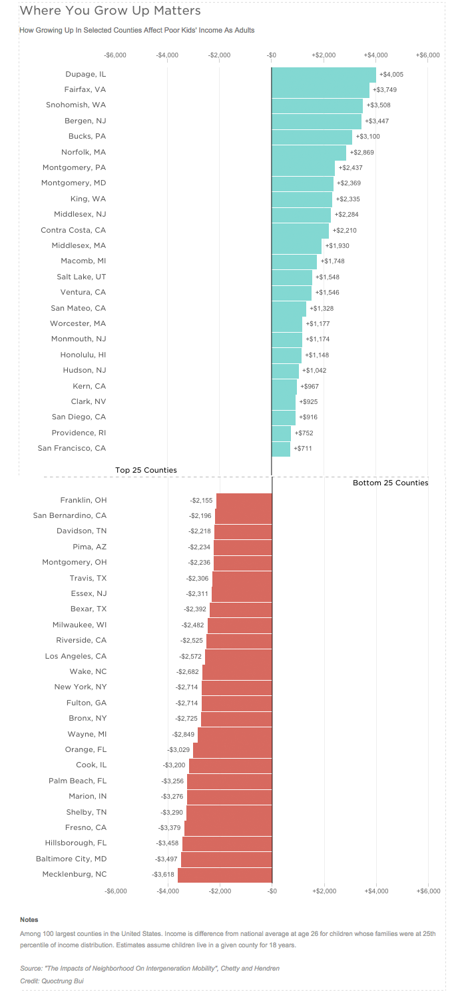

How Growing Up In Selected Counties Affects Poor Kids' Income As Adults

Notes
Among 100 largest counties in the United States. Income is difference from national average at age 26 for children whose families were at 25th percentile of income distribution. Estimates assume children live in a given county for 18 years.